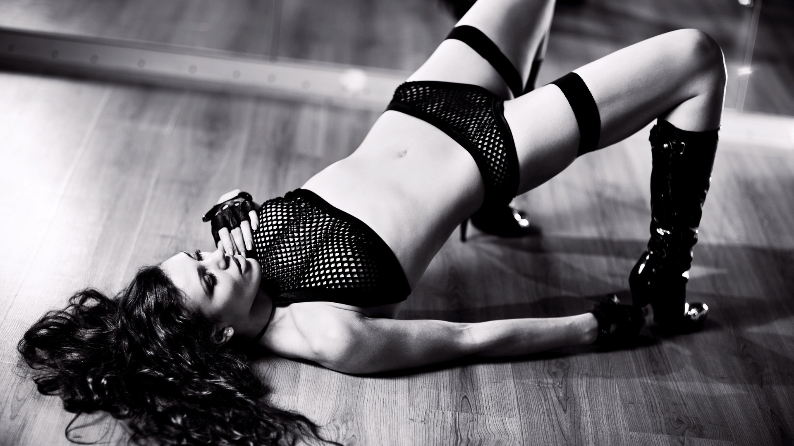

Go-Go танец - стиль эротического танца без раздевания танцора, танец-импровизация.
Танцевальное направление go-go пользуется сегодня бешеной популярностью. Почему танец go-go вызывает интерес? Как научиться правильно танцевать go-go? Эти вопросы все чаще задают девушки, которые хотят научиться танцевать гоу-гоу.

Танец go-go - это не какой-то определенный стиль, скорее это множество различных стилей (таких как стрип, латина, джаз и многие другие), объединенных в одно направление - их танцуют преимущественно в ночных клубах, на модных вечеринках, презентациях. Танец go-go - это не просто движения, а умение хорошо и технично двигаться под музыку, чувствовать стиль, наслаждаться ритмом, так же прорабатывается пластика всего тела, умение красиво переходить из одного стиля танца в другой, работа над эмоциями в танце, с пространством и со зрителем.
Go-Go самый современный и очень популярный клубный танец, он подходит всем без исключения.